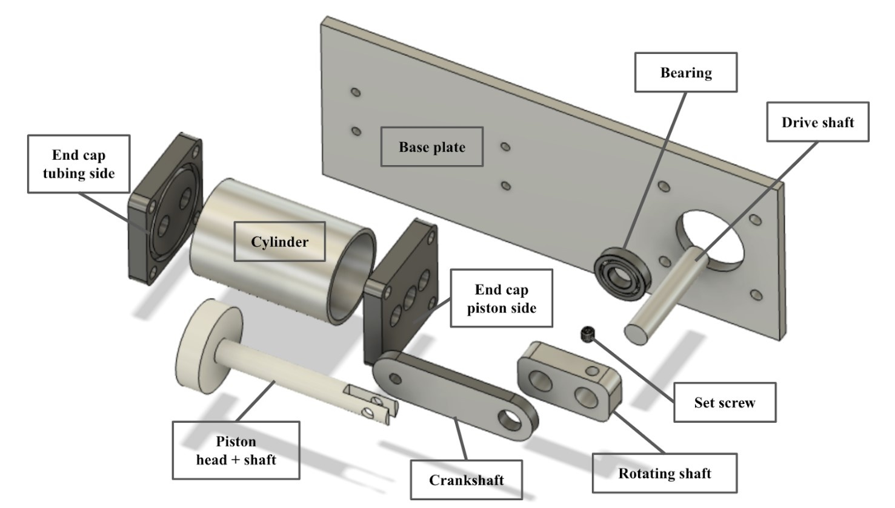

MAE 2250: Mechanical Synthesis is a course for undergraduates at Cornell focused on teaching the fundamentals of mechanical design. We had two major projects: designing a water pump that could pump at least 1L/min, and designing a new product to exhibit user-centric design.
Myself and 5 other students worked to design and manufacture a single-piston water pump. I was chosen by my teammates to be the Scheduling Coordinator and Manufacturing Lead, making sure we got all of the required machine shop shifts and helping people to machine their parts as I had slightly more experience than some others on our team.
The pump design selection began with research about three pump designs: peristaltic, centrifugal, and piston. Each pump variation supported their own advantages and disadvantages, and the design that was ultimately chosen conformed to the design and manufacturing constraints. The water pump design that was selected was a cylindrical piston pump design. Piston pumps are advantageous because of their simplicity and versatility. Given the constraints for the project, the piston pump was deemed the most logical choice due to its ease of machinability and low material cost.
 Functional Decomposition of Water PumpOur pump achieved a rate of 2.8L/min, exceding the pass requirement by 280% and achieving the 2nd Place finish in the class.
 Our Piston Pump during Competition
Our Piston Pump during Competition
I designed a centrifugal paint brush spinner to dry wet paintbrushes rapidly. This device uses a helical twist rod profile to transfer a linear pushing force into rotational inertia. I also utilized Fusion 360 Generative Design to optimize weight in the paint brush housing.
Paint Brush Spinner Render Spin Test
Spin Test
 Reuleaux Gear Train
Reuleaux Gear Train
 Mug Recreation
Mug Recreation